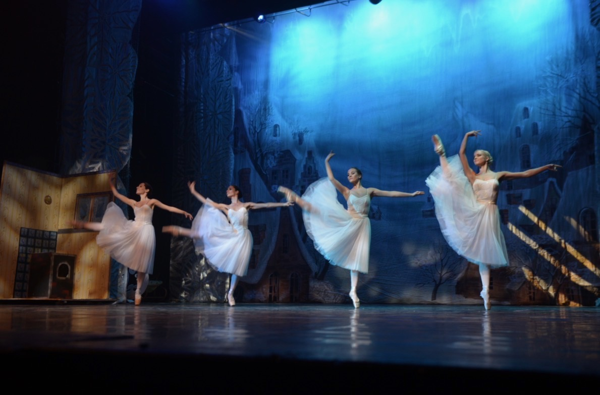
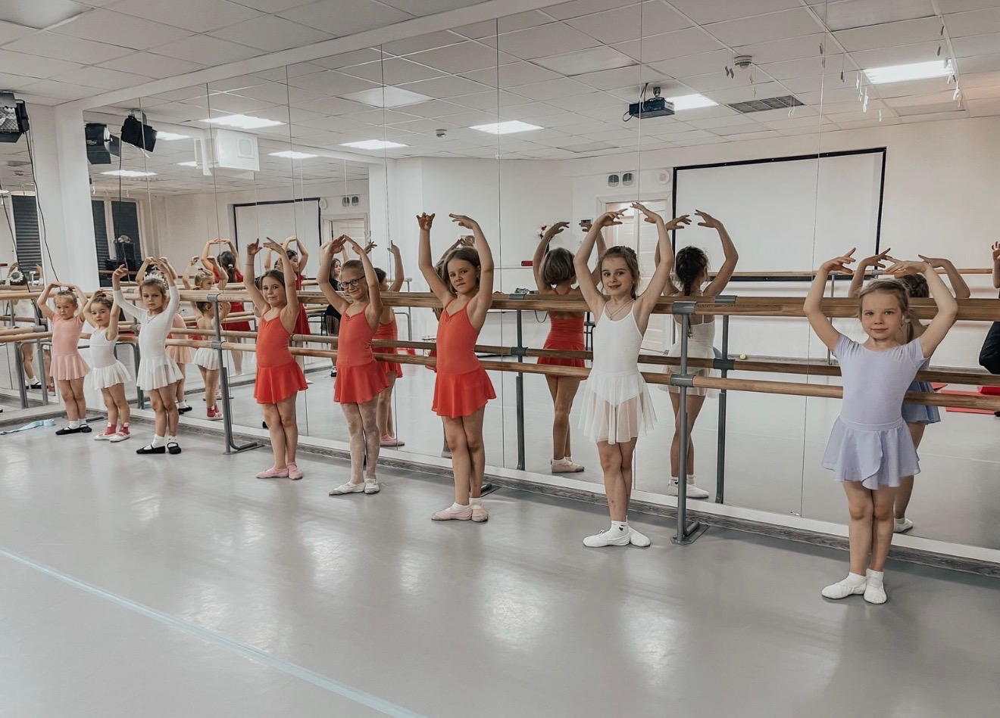
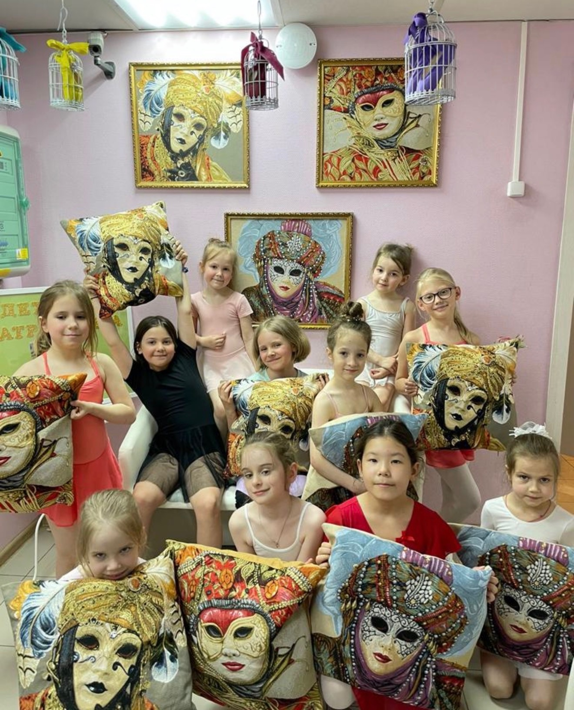
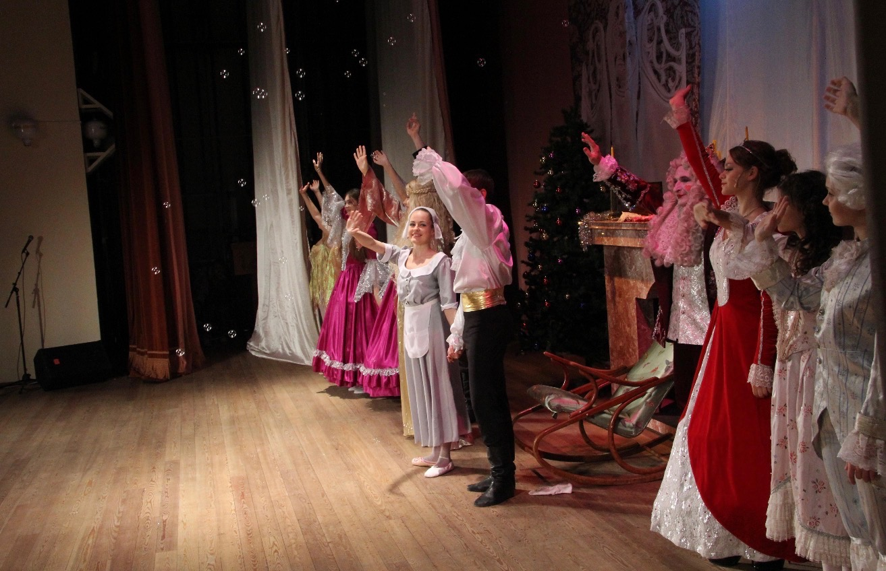

3,5–7 лет
Хореография для детей
Развиваем координацию, музыкальность, гибкость, осанку и артистичность. Первые два года — без спектаклей.
ПодробнееМосква · с 1992 года
Более 30 лет открываем детям мир сцены, классического танца и театра.
Направления
Можно заниматься одним направлением или совмещать несколько.
3,5–7 лет
Развиваем координацию, музыкальность, гибкость, осанку и артистичность. Первые два года — без спектаклей.
Подробнее8–18 лет
Классическая школа, постановка корпуса, техника, работа у станка и на середине, сценическая практика.
Подробнее8–18 лет
Развитие гибкости, подвижности, телесной выразительности, силы и красивой осанки.
Подробнее3–18 лет
Актёрское мастерство, сценическая речь и движение, работа с образом и взаимодействие на сцене.
Подробнее18–55 лет
Балет для взрослых: осанка, пластика, координация и гармоничная работа с телом независимо от подготовки.
ПодробнееСпектакли
В «Эльфе» дети не только занимаются в зале. По мере подготовки они выходят на сцену и становятся участниками постановок театра.


История театра
Детский театр балета «Эльф» существует с 1992 года. За это время театр прошёл большой путь — от первых занятий и постановок до собственной творческой школы, которую сегодня продолжают новые поколения учеников и педагогов.


Преемственность
Многие воспитанники «Эльфа» продолжили заниматься балетом и связали взрослую жизнь с искусством. Для кого-то театр стал первым шагом к профессиональной сцене, для кого-то — основой любви к танцу, театру и творчеству.
Главное, что сохраняется спустя десятилетия, — передача опыта от педагога к ученику и от одного поколения театра к следующему.


Педагоги
В основе занятий — личная работа педагога с ребёнком, внимание к технике, сценической культуре и развитию каждого ученика.
Основатель театра · режиссёр · педагог
Руководитель театра · педагог

Педагог по сценическому движению
Жизнь театра
В «Эльфе» важна не только сцена, но и весь путь к ней — занятия в зале, работа с педагогом, общение, репетиции и моменты, которые остаются в памяти.






Пробное занятие
Пробное занятие — это возможность для ребёнка познакомиться с педагогом, попробовать себя в движении и почувствовать атмосферу театра. Он прикоснётся к миру балета, музыки и сцены и сможет понять, интересно ли ему выбранное направление.
Занятия помогают развивать координацию, гибкость, осанку и физическую выносливость, учат лучше чувствовать своё тело, быть внимательнее и увереннее в себе. Творчество, музыка и работа в группе дополняют обычную физическую нагрузку и делают занятия разнообразнее.
На первом занятии не нужно ничего доказывать — важно попробовать и понять, хочется ли продолжать.
Контакты
Позвоните нам, чтобы уточнить подходящее направление и договориться о пробном занятии.